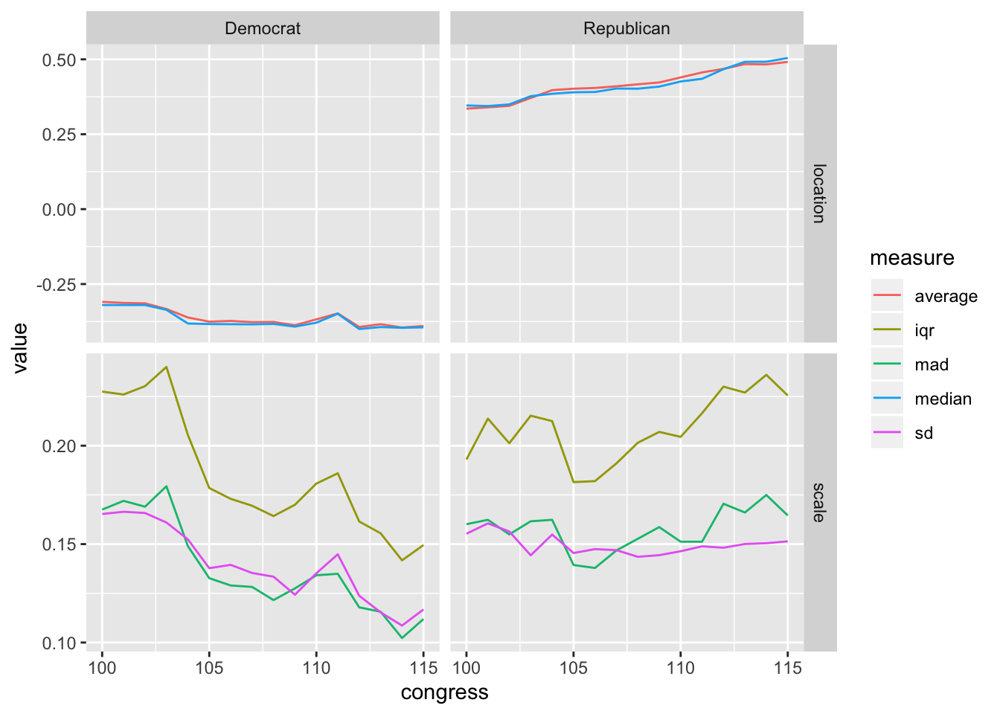

Chapter 10 Location and Scale in R
We can easily calculate all these measures of location and scale in R.
# create variable x = {1, 2, 3, 4, 5}
x <- 1:5
# compute measures of location and scale
mean(x) # average## [1] 3## [1] 1.581139## [1] 3## [1] 2## [1] 1.4826The functions above work nicely for computing on whole variables. But in most cases, we are interested in comparing the summaries across groups.
Take the nominate data set for example.
# load packages
library(tidyverse)
# load nominate data
df <- read_rds("data/nominate.rds") %>%
glimpse()## Observations: 7,080
## Variables: 7
## $ congress <int> 100, 100, 100, 100, 100, 100, 100, 100, 100, 100, 100, …
## $ chamber <chr> "House", "House", "House", "House", "House", "House", "…
## $ state <chr> "AL", "AL", "AL", "AL", "AL", "AL", "AL", "AK", "AZ", "…
## $ district <int> 2, 4, 3, 5, 6, 1, 7, 1, 2, 3, 5, 4, 1, 3, 1, 4, 2, 36, …
## $ party <fct> Republican, Democrat, Democrat, Democrat, Democrat, Rep…
## $ name <chr> "DICKINSON, William Louis", "BEVILL, Tom", "NICHOLS, Wi…
## $ ideology <dbl> 0.398, -0.213, -0.042, -0.175, -0.060, 0.373, -0.085, 0…For these data, we might want to know the average ideology for Republicans and Democrats. We could do it the hard way.
# create a data frame with only republicans
rep_df <- df %>%
filter(party == "Republican")
# compute average
mean(rep_df$ideology, na.rm = TRUE)## [1] 0.4213385But this is tedious, especially if we wanted to do it by party and Congress.
To compute these summaries for lots of subsets of the data, we have the group_by()/summarize() workflow.
group_by() defines several groups in the data frame. The first argument is the data frame to group (but we’ll %>% it in). The remaining arguments are the grouping variables. You can think if the groups as a footnote at the bottom of the data set that just mentions the variables that define the groups of interest. Whenever we act (in the wrangling sense) on the data set and the action makes sense in the context of groups, the action will happen by group.
After grouping, we use summarize() to create summaries for each group. The first argument is the data frame to summarize (but we’ll %>% it in). The remaining arguments are the summarizes to compute. The names of the remaining arguments become variables in the resulting data frame.
smry_df <- df %>%
# group by party and congress
group_by(party, congress) %>%
# compute all of our measures of location and scale
summarize(average = mean(ideology, na.rm = TRUE),
sd = sd(ideology, na.rm = TRUE),
median = median(ideology, na.rm = TRUE),
iqr = IQR(ideology, na.rm = TRUE),
mad = mad(ideology, na.rm = TRUE)) %>%
# quick look at our work
glimpse()## Observations: 32
## Variables: 7
## Groups: party [2]
## $ party <fct> Democrat, Democrat, Democrat, Democrat, Democrat, Democ…
## $ congress <int> 100, 101, 102, 103, 104, 105, 106, 107, 108, 109, 110, …
## $ average <dbl> -0.3092901, -0.3130075, -0.3142407, -0.3333065, -0.3615…
## $ sd <dbl> 0.1653092, 0.1664293, 0.1658089, 0.1609726, 0.1524251, …
## $ median <dbl> -0.3200, -0.3200, -0.3200, -0.3360, -0.3815, -0.3835, -…
## $ iqr <dbl> 0.22750, 0.22600, 0.23025, 0.24000, 0.20550, 0.17850, 0…
## $ mad <dbl> 0.1675338, 0.1719816, 0.1690164, 0.1793946, 0.1490013, …We can plot this measures to get a sense of how they change over time.
# wrangle the data for plotting
gg_df <- smry_df %>%
pivot_longer(average:mad, names_to = "measure") %>%
mutate(measure_of = ifelse(measure %in% c("average", "median"), "location", "scale")) %>%
glimpse()## Observations: 160
## Variables: 5
## Groups: party [2]
## $ party <fct> Democrat, Democrat, Democrat, Democrat, Democrat, Dem…
## $ congress <int> 100, 100, 100, 100, 100, 101, 101, 101, 101, 101, 102…
## $ measure <chr> "average", "sd", "median", "iqr", "mad", "average", "…
## $ value <dbl> -0.3092901, 0.1653092, -0.3200000, 0.2275000, 0.16753…
## $ measure_of <chr> "location", "scale", "location", "scale", "scale", "l…# plot the measures of location and scale
ggplot(gg_df, aes(x = congress, y = value, color = measure)) +
geom_line() +
facet_grid(cols = vars(party), rows = vars(measure_of), scales = "free_y")